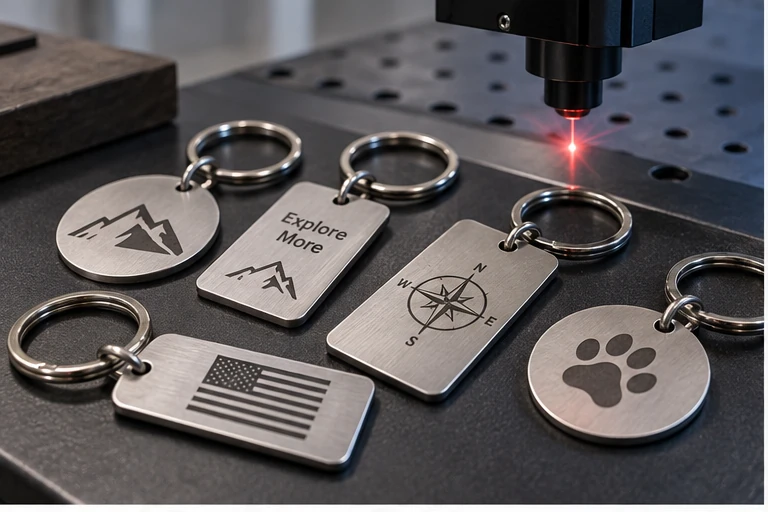
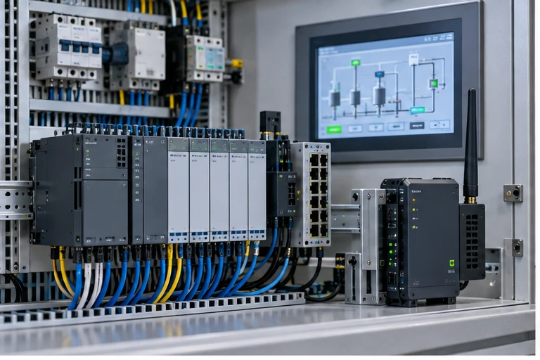
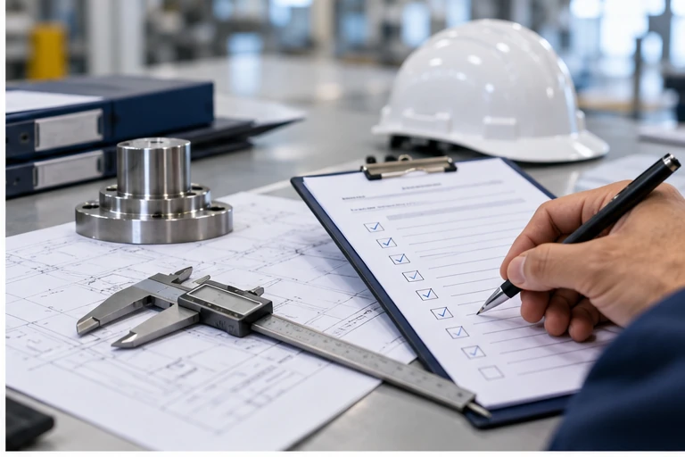

Industrial services built around real buyer requirements.
Each service page explains scope, typical applications, what information to send and how the service connects with other Crecer Grande capabilities.

Laser Marking Service Kolkata
QR, serial, part-number, logo and traceability marking.
Open service page →
Laser Cutting Service Kolkata
SS, MS and aluminium sheet/plate cutting and fabrication coordination.
Open service page →
3D Printing Service Kolkata
FDM and resin prototyping, fixtures, housings and low-volume parts.
Open service page →
Reverse Engineering Kolkata
Develop engineering data and replacement parts from existing components.
Open service page →
Custom & Obsolete Machine Spares
Replacement component development from drawings, samples or requirements.
Open service page →
Industrial Machine Maintenance Kolkata
Breakdown, troubleshooting and preventive-maintenance support.
Open service page →
Mechanical Design & CAD Kolkata
3D CAD, manufacturing drawings, BOM, DFM/DFA and technical documentation.
Open service page →
Industrial Automation Kolkata
PLC, HMI, sensors, drives, control panels, IIoT and retrofit support.
Open service page →
Sheet Metal Bending Kolkata
Press-brake bending, development, tooling review and fabrication coordination.
Open service page →
ISO 9001 & QMS Support Kolkata
QMS documentation, SOPs, registers, internal audit and audit readiness.
Open service page →
Industrial Inspection & QA Kolkata
Dimensional/visual inspection, PDI, FAI, reports and NCR/CAPA follow-up.
Open service page →GeM & Tender Support Kolkata
Bid discovery, eligibility review, compliance documents and submission support.
Open service page →A requirement can move across more than one service.
Reverse engineering can lead to machining. Laser cutting can lead to fabrication. 3D printing can be used for first-article validation. Machine maintenance can lead to replacement-spare development.
Start with
- Drawing or CAD file
- Existing sample component
- Photograph / machine nameplate
- Part number or specification
- Fault description
- Required function and quantity
Need something not listed here?
Send the requirement and we will review the practical route.